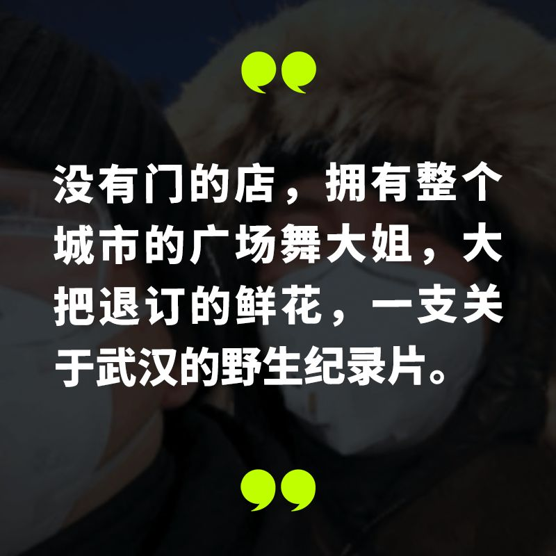
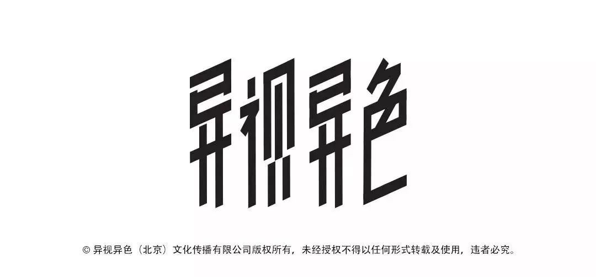

武汉呼叫：封城内外两个女孩的连线
原文链接 备份链接 我是肖途，2019 年加入 “BIE别的” 团队的编辑，武汉人。节前，我在最后一刻退掉了回武汉的车票，但这不代表我的春节过得有丝毫轻松。我的爸爸妈妈在武汉，我每天只能与他们视频通话。 早上醒来，北京下过雪了，一场没由来 …

_光头是精酿啤酒品牌 “18 号酒馆” 的主理人，他和他的酒馆被困在武汉，一场突如其来的传染病的阴影中。_和一位偶然被封锁在同一座城市的朋友一起，他们打开手机的拍摄功能，开始了一场毫无目的的城市漫游。
_两人会全副武装地行进 23 公里，骑着电动车从汉口到光谷，就因为那曾是武汉人眼中的 “宇宙中心”。从他的描述中，我见到这座城市人潮褪去后的景象，一个身处险境的城市古怪、好笑、生猛的日常。以下是他的自述。_

图源于王粒丁
我叫光头，2013 年，在武汉开了一家精酿酒馆，从未停止营业过，即使大年三十那一天晚上。
2019 年，是我们快速发展的一年，新开了两家店铺，大家铆足了劲想冲击 2020。
今天是我们歇业的第 29 天，跟所有的餐饮行业一样，活着成为了我们 2020 年的唯一目标。
我们在 1 月 21 关闭了第一家店，那是疫情开始爆发的头几天，腊月二十七。店里的人慢慢变少，员工人心惶惶，又临近过年，有些外地的员工被家里人催着回家。于是，我们陆续关停了其他门店和酒厂。
原计划春节营业期间安排了员工留守武汉，因为封城也回不去，好在后厨准备了充足的食材，够好一阵子的宅居。一起留下的还有厨师，吃饭彻底不用愁了。
 西餐厨师做起中餐也不赖｜图片来源 18 号酒馆
西餐厨师做起中餐也不赖｜图片来源 18 号酒馆
往年这时候，很多朋友会回来，他们有的在外地工作，有的在国外上学，我们的聚会能排满整个春节。今年王粒丁是 1 月 22 日来的，在武汉转车顺便找我喝酒。隔天酒醒，才看到了封城的消息。
我和他是 18 年底在赞斯卡认识，王粒丁在那骑车，我和朋友徒步。在一家小餐馆里碰到，我说这竟然还有中国人，那个地方是争议地区连人都很少见。闲着聊天，我说我是做啤酒的。他说跳东湖吗？我说我靠。那款精酿正是我们打出名头的酒。分开前，他说哪天要来酒馆里喝一杯，没想到一来就走不了了。
我俩颓了三四天，觉得这样不行。我本就是个在家呆不住的人，与其惶惶度日，不如去做点什么。换了辆能跑好远的电动车，我和王粒丁一起，拿起了相机拍摄一下此时此刻的武汉。
我发小在武汉市肺科医院的 CT 室工作，我俩想着能拍点一线医护的故事，就商量去找他聊聊。刚到医院，没说两句，发小就招呼我俩先拍个片子（肺部 CT），“来都来了。”
结果证明我们很健康，他指着黑白 CT 图上我的肺，说它们粉嫩粉嫩的。但我和王粒丁自己的拍片却不顺利，医院的规矩，不能采访更不能录影。
我俩骑着电动车，绕着武汉转。封城的前两天，街上好像只有两类人，不得不出来工作的人，和 “神经病”。我们在江汉路碰到一个人三次，他骑着摩拜在宽阔的马路上，一边大笑一边唱着歌。我们骑着车跟他并排，他说着方言，一点也听不懂。那种快乐和兴奋好像是人们都躲在家里了，整个城市只属于他。
我总觉得武汉人比其他城市的人要 “大条”，也市井一些。在空的楼宇间，我们听到喇叭放出的音乐，寻过去看到一位环卫阿姨在路边跳舞。她不想我们拍到她没在干活，担心丢了饭碗。“平常春节热闹，我们都没有休息的时候，现在连出来扔垃圾的人都没有，我想闲着就锻炼一下。” 我觉得有趣，跟她解释我们只是拍着玩，她说行，我们就把车停在一边，跟环卫阿姨还有一个附近的街坊跳了一会。
后来我们又碰到了很多环卫工人，他们出于生计仍在为城市的运作担当着协调者的角色。
 广场舞领军者 —— 光头和临时的舞搭子｜图源见水印
广场舞领军者 —— 光头和临时的舞搭子｜图源见水印
街上开门的大多是那些往日里生意不佳的店铺。一家老字号热干面店所在的街区被修成过江隧道后，生意差了不少。这家二十年的老店，自开业就没关过门，24 小时营业，现在也还开着。往年酒馆春节营业的时候，一帮人晚上常去吃宵夜。老板娘，我们喊她大姐，就在门口叼着烟，偶尔炸点小吃，自己吃也卖。
王粒丁很好奇它为什么不关门。对方很 “撩撇”（武汉方言，干脆）地说：“我们这家店就没门。” 店里的工人指给王粒丁看，门口就只有一个门框。
 硬核的热干面店｜图源见水印
硬核的热干面店｜图源见水印
我们边拍边吃点。拍到烧烤店的时候，我们自己搬了几个小板凳拼成桌子坐着吃。原本疫情期间，餐饮业规定只许外带，可打包的烧烤怎么能好吃。
隔了两三米，我们揭了口罩，洗干净手，想着赶紧吃完赶紧走。就着乌苏，在清冷的街上，恍惚间我觉得这场疫情跟我一点关系都没有。
 在做好卫生的前提下就餐，拒绝人心惶惶｜图源见水印
在做好卫生的前提下就餐，拒绝人心惶惶｜图源见水印
封城后的第一个晴天，我们骑车经过江汉桥，往下望，每隔十米就有个人在晒太阳。东湖边钓鱼的老头，戴着口罩，跟左右的人隔了五米远，特别像网上说的 “北欧式排队法”。过两天再路过的时候，已经一个人都看不见了，气氛越来越紧张。
我一朋友是开花店的，过年前囤了好些花，封城后，被退订也没空去打理，就叫我陪她去花房看看。好多花都臭了，一进门就闻到刺鼻的气味。她把那些还好着的花包起来给我带走，现在家里摆满了鲜花，还有一些特别贵的，我醒来的时候觉得特别幸福。
王粒丁成了我家的沙发客，他住的小区封锁之后，就搬了过来，我俩一起过日子。早几天，我们想着法子，趁着隔壁私人影院的老板来店里做卫生的时候，拜托他给我们多开了几个小时。我们悄摸地看了两场电影，《爱尔兰人》和《寄生虫》，这种感觉就像是坐牢的人吃到了炸圆子（肉丸）。在可控的范围内，我们想尽量拓宽自己的半径，或许下次有机会能找个私人理发师到家里剪个头。
 左边的是光头，他搂着的就是王粒丁｜图源自 18 号酒馆
左边的是光头，他搂着的就是王粒丁｜图源自 18 号酒馆
都说餐饮业是受疫情影响最大的行业，我觉得没有那么悲观。长远看，人生中的一两个月不会把人打垮，就算是半年，它也不至于把你变成什么样子，哪怕什么都没有了，你只要有能力，还能活下去，我反正没见过人被饿死的。我们的品牌属于行业里比较头部的几家，如果连我们都没有了，可能这个行业都没了，那也不是我该担心的事。保护好员工和身边的家人朋友，比起经济财富，生命才更重要。
头几天看到头几天看到一些品牌讲述生存维艰的新闻，还有老板手撕员工降薪信的视频，我挺不理解的。现在最紧要的是受灾的家庭，一线的医护工作者，我们这些中小企业打肿脸充胖子去帮助更需要帮助的人，之后我们变成了更需要帮助的人时，会有人反哺我们。我一直相信这个理。
有的外卖小哥说，他接到好多海外的订单送到医院去，我 CT 室工作的发小说，他们收到的牛奶能喝好一阵子。我想也送点东西去，但我们最多的是酒，总感觉不太像样。
 在医院门口等订单的外卖小哥｜图源见水印
在医院门口等订单的外卖小哥｜图源见水印
我和王粒丁的片子发在酒馆的公众号上，我把这些也都写上了，就有一哥们留言说：“ 我以后再也不买你们酒了，太主流想法了，一点都不摇滚。” 我就想 “我操你妈逼”，这句话摇不摇滚。
我还是相信这个世界是爱组成的，如果这个事情不发生在你身上的话，它只是你生命中一个故事。很多年以后，可能我只记得，我们在疫情期间拍了一部小片，跟一个朋友一块住了十几天，那段时间生意不太好，还有人们努力地守望和相助。
武汉人喜欢叫人 “师傅”，这是一个涵盖各行各业，不论性别的称呼。疫情期间，接送医护人员的志愿者、 捐赠 20 万物资给医护人员送饭的餐饮店老板、流转在街头的环卫工人，他们通通被称为 “师傅”。这是一句温暖的称号。我希望这个城市的名片还能 “敞亮”，它的命运不会像那些在市场蒙尘的速食热干面那样。
每天都有一些不好的信息冲击着我们，不知道疫情何时才能出现拐点，也不知道什么时候才能正式开工。拍片跟大家接触的过程中少了一些焦虑，多了一些希望。总之，希望在疫情结束之后，能够喝一场大的。
点击收看光头和王粒丁拍摄的野生纪录片《武汉守城人》：
// 作者 ：肖途，光头
// 编辑 ：Alexwood
在这次疫情中，你是否被迫改变了自己的生活习惯，你和周围的人产生了怎样新的关系，你获得了哪些观察和思考？如果你有想法想要分享，请发送电子邮件到 tougao@yishiyise.com，注明 “武汉呼叫”，我们的编辑看到后可能会与你联系。
2019 年年末的时候我们希望每个人都能在 2020 年更脚踏实地一点，而 2020 如此凶猛，当我们都困在这场灾难之中，每一个你身边的故事带来的感受或许都将指向我们的未来。虽然叫 “武汉呼叫”，但疫情影响的是我们所有人。无论你来自哪里，身在哪里，我们都想听到你的故事。



原文链接 备份链接 我是肖途，2019 年加入 “BIE别的” 团队的编辑，武汉人。节前，我在最后一刻退掉了回武汉的车票，但这不代表我的春节过得有丝毫轻松。我的爸爸妈妈在武汉，我每天只能与他们视频通话。 早上醒来，北京下过雪了，一场没由来 …
原文链接 备份链接 岛语 非常时期，武汉成了全国人民挂念、祈福的城市。封城后，武汉人民的真实生活是什么样？ 武汉在发生哪些变化？ 正和岛自1月26日起特别推出“叶青专栏”。叶青是一位定居武汉40年的市民，也是一名学者和官员。在过往多期的专 …
原文链接 备份链接 Original 秦前红教授 法学学术前沿 法学学术前沿 WeChat ID frontiers-of-law About Feature 聚焦法治精神、学术思想、前沿时事；旨在传播法界言谈、分享法学文萃、启蒙社会共 …
原文链接 备份链接 岛语 非常时期，武汉成了全国人民挂念、祈福的城市。封城后，武汉人民的真实生活是什么样？ 武汉在发生哪些变化？ 正和岛自1月26日起特别推出“叶青专栏”。叶青是一位定居武汉40年的市民，也是一名学者和官员。在过往多期的专 …
原文链接 备份链接 据国家卫健委公布数据显示，全国新型冠状病毒感染的肺炎疫情确诊病例在 2 月 3 日（0 时-24 时）当天新增 3,235 例。其中，湖北省新确诊了 2,345 例。截至 2 月 4 日 9 时， …